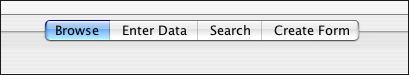
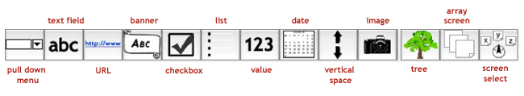

Tabs

The Browse mode allows an inquiring
investigator to see data that
was acquired in a form or data collection event, but not to change that data.
This information
is shown in a text-based format.
A form can be opened in Browse mode by either double-clicking the form name
or by selecting the form name and then clicking the "Open" button. If a data
file has been added to the form, a
clickable link will be visible, and the data file
can be opened by clicking the link and then choosing the appropriate application
to handle the file.
The Enter Data tab provides the ability to
change and add information to the data forms. New forms can be also be created in
Enter Data mode by selecting "New" from the File menu, and choosing a template.
The Search tab contains the option to do a basic keyword search, or to
design, edit, or execute a more complex custom search. The results of a search
are also displayed under the Search tab.
The Create Form tab contains the various tools for creating or modifying
templates. These
tools are divided into two groups: first-level widgets and containers.
First-level widgets include the pull down, text field, url,
banner, check box, list, value, date, vertical space and image
widgets.
The containers include the tree, array screen and screen select widgets, as shown in the figure
below.

| Previous page | Return to top of page | Next page |